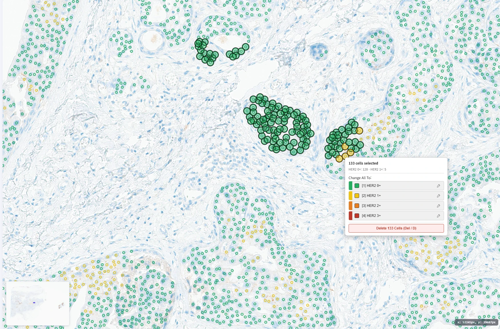

프로젝트 관리
연구 목적에 따라 프로젝트와
분석 작업을 구성합니다.
조직과 세포의 정량 분석부터 가상염색,
AI 보조 라벨링까지. 원본 영상과 AI 결과를
같은 위치에서 비교하고 검토하세요.
작은 세포의 차이부터 조직 전체의 분포까지.
내 연구에 필요한 기능을 직접 살펴보세요.
AI 결과는 전문가의 검토를 지원합니다.

분석은 검토로 완성됩니다.
세포 하나의 판단부터 팀의 작업 흐름까지 연결하세요.
조직의 맥락 안에서 세포 분류 결과를 검토합니다.
AI의 원본 결과와 전문가의 수정 내용을 구분합니다.
라벨 작성과 검수의 진행 상태를 함께 확인합니다.
슬라이드 준비에서 결과 검토까지.
웹 기반 플랫폼에서 연구 흐름을 연결합니다.
연구 목적에 따라 프로젝트와
분석 작업을 구성합니다.
같은 케이스의 슬라이드를 연결해
조직의 맥락을 함께 살펴봅니다.
프로젝트에 필요한 분석을 설정하고
반복되는 작업 흐름을 정리합니다.
기관 서버 운영과 역할별 접근 관리로
팀의 작업 환경을 구성합니다.
관심 분석 기능과 연구 흐름을 바탕으로
MeDIAuto AI의 활용 방법을 함께 살펴보세요.
병리 연구 · 바이오마커 분석 · AI 데이터 구축
실제 조직 영상과 해당 위치의 AI 결과를 사용합니다. 넓은 영역과 확대 영역을 선택하면 원본과 결과가 함께 바뀌며, 경계를 움직여 같은 위치를 비교할 수 있습니다.
AI 결과는 전문가 검토를 지원합니다. HER2의 염색 강도별 분류·집계는 최종 임상 등급 판정과 동일하지 않으며, 제안된 세포 라벨도 전문가의 확인과 수정이 필요합니다.
VS IHC는 원본 IHC에서 Virtual H&E를 생성합니다. 같은 위치의 두 영상을 비교하도록 지원하며, 실제 IHC 검사를 대체한다는 의미는 아닙니다.
기관 서버 운영, 프로젝트별 분석 설정, 역할별 접근 관리를 지원합니다. 구체적인 구성과 연결 범위는 데모 상담에서 확인해 주세요.